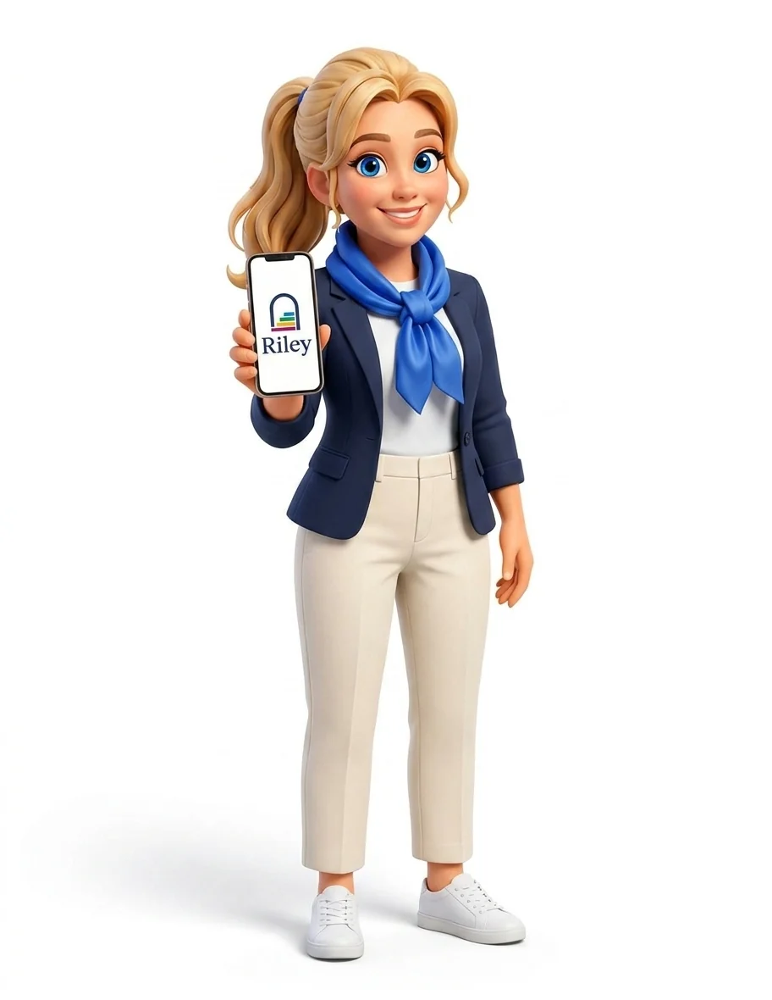

Riley: research and go-to-market plan for an AI teammate
An ongoing internship, within the final project of Reichman University's AI Marketing Pro course with Google. Riley is an Israeli startup: an AI teammate for New York real estate agents that answers every inquiry in seconds and books the showing. In a team of six we are building its go-to-market plan. I started with the research; the plan goes on.

Riley, in person.
The first deliverable: a character for the content, made with generative AI from the logo and the brand. Riley is «she» in every text the company writes, and until now she had no face.
The problem: the first to respond keeps the client
Inquiries arrive at all hours, the first reply usually wins the client, and most agents have nobody to answer while they are out at a showing. With public data: a 2024 secret-shopper study measured that an online property inquiry waits more than eight hours on average for a reply and that 47% are never answered; according to Zillow (2025), 47% of buyers hired the first agent they spoke with; according to the NAR, 83% of agents have no assistant. Riley answers in seconds, in the agent's name, asks the questions that matter and books the showing on their calendar.
First, research that separates what is known from what is believed
Before the first meeting with Riley's team I read the three sources I had (what the company says about itself, what its live website says and what can be verified outside) and compared them. Thirty-nine pages in English with Spanish glosses, and one rule on every figure: verified if I saw it at the source, reported if the company or a third party says it, inferred if it is my own conclusion. Eight sections: who is asking for the plan and what they really want, their go-to-market strategy analysed, a competitor map (AI assistants for individual agents, teams and brokerages, complete systems), the New York rental market, what gets searched on Google and in AI engines, a communication flow with twenty product questions, a day in the life of an agent and a measurable seven-step plan, with one decision a week.
A Tuesday in the life of a Brooklyn rental agent
A composite persona, not a real person. At each moment of the day: what she does, where the product appears and where advertising or word of mouth can appear.
- Wakes up and checks her phone
Eleven inquiries came in overnight from the portals. It is the most anxious moment of the day: every one is a showing that can go cold.
- Subway to the office
Little signal in the tunnels. She reads or listens to what she downloaded earlier.
- Weekly office meeting
The broker gathers the agents: listings, lost leads, tools. They compare what they use.
- Three showings in three buildings
On foot, on the street, unable to touch her phone. Inquiries keep coming in.
- Lunch and scrolling
Facebook groups for New York agents, Instagram, sometimes Reddit. She asks which tool to use.
- Call with a landlord
Under the FARE Act the landlord pays the commission and now asks why an inquiry took so long to be answered.
- Subway home, email and LinkedIn
She receives pitches from other vendors.
- Five minutes with the dashboard
She reviews what Riley did today. Approves, corrects, decides how much to let go.
- One last look
The night's inquiries arrive. At this hour the average agent answers eight hours later.
The agent's journey, with the questions that need answers
Seven stages, from noticing the pain to recommending Riley. In each one, the possible channels and the questions that must have an answer for that stage to work. The questions came from comparing what the company says with what I found, and they are to take to the meeting, not facts.
- 1 · Notices the pain
A lead goes cold; another agent replied first.
InstagramFacebookNewsletters- Message: how to make each agent see their own number, not the market's.
- Message: which phrase makes it clear in ten seconds that Riley is not «another AI» but a booked showing.
- 2 · Discovers Riley
A colleague, a group, an article, the office.
Word of mouthGroupsPressEvents- Buyer: in New York rentals, who decides and who pays.
- Trust: what happens when the message comes from a team in Israel; who is the face of Riley in New York.
- Distribution: if the agent on the other side sees Riley working, does Riley sign its messages?
- 3 · Evaluates and doubts
Looks at the site, the case, the prices, compares.
WebsiteCaseComparisonsAI search- Proof: how many inquiries ended in a lease and how many the agent would have handled anyway; without that, the number speaks of speed, not revenue.
- Dependency: what happens if the portals change how they deliver leads or limit automatic replies.
- Competition: what is left if a big CRM or an AI chat adds free automatic replies.
- 4 · 14-day trial
Signs up with a card and connects their email.
Sign-upSetupActivation emails- Trial: how many leads they need to see before they trust it; in rentals they come in waves.
- Control: which mode it starts in and when they dare to let go.
- Legal: consent for text and phone.
- 5 · Riley answers their first lead
The moment of truth: the agent reads what Riley said.
AppDaily recapAlerts- Quality: when Riley doesn't know or gets it wrong, who answers the renter.
- Transparency: Riley says it is an AI; does that lower the showing rate or is it an advantage?
- Risk: how it tells a real renter from a scammer or a bot.
- 6 · Pays and stays
The trial ends and they decide to continue.
BillingAnnual planSupport- Retention: rentals have a high and a low season; what keeps the payment going in winter.
- 7 · Recommends
Tells a colleague or changes office and takes Riley along.
ReferralsCommunityCases- Referrals: agents change offices often; what happens to their history.
- Commissions: whether referral rewards can be paid without breaking licence rules.
To be continued
In progress. The internship continues and this page fills in as it moves forward.